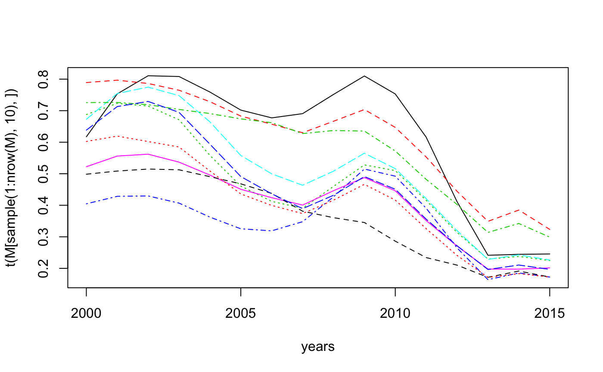
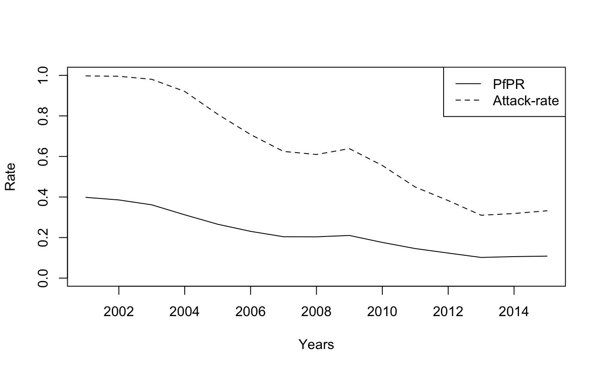

MAP_example.Rmd## Choose location and years of estimation
loc <- "UGA"
years <- 2000:2015
## Pull shapefile and PfPR raster
shp <- getShp(ISO = loc)
#> OGR data source with driver: ESRI Shapefile
#> Source: "/private/var/folders/t6/j4gcn9yx16j9dmx6mm3nflzm0000gp/T/RtmpIPJbQ6/shp/shpc3b21f38cc5d/mapadmin_0_2018.shp", layer: "mapadmin_0_2018"
#> with 1 features
#> It has 8 fields
PfPR2_10 <- getRaster(surface = "Plasmodium falciparum PR2-10", shp = shp, year = years)
#> Downloading list of available rasters...
#> All specified surfaces are available to download.
#> Checking if the following Surface-Year combinations are available to download:
#>
#> RASTER CODE YEAR
#> - Plasmodium falciparum PR2-10: 2000, 2001, 2002, 2003, 2004, 2005, 2006, 2007, 2008, 2009, 2010, 2011, 2012, 2013, 2014, 2015
#>
#> Downloading list of available rasters...
#> Downloaded 2015_Nature_Africa_PR for 2000.
#> Downloading list of available rasters...
#> Downloaded 2015_Nature_Africa_PR for 2001.
#> Downloading list of available rasters...
#> Downloaded 2015_Nature_Africa_PR for 2002.
#> Downloading list of available rasters...
#> Downloaded 2015_Nature_Africa_PR for 2003.
#> Downloading list of available rasters...
#> Downloaded 2015_Nature_Africa_PR for 2004.
#> Downloading list of available rasters...
#> Downloaded 2015_Nature_Africa_PR for 2005.
#> Downloading list of available rasters...
#> Downloaded 2015_Nature_Africa_PR for 2006.
#> Downloading list of available rasters...
#> Downloaded 2015_Nature_Africa_PR for 2007.
#> Downloading list of available rasters...
#> Downloaded 2015_Nature_Africa_PR for 2008.
#> Downloading list of available rasters...
#> Downloaded 2015_Nature_Africa_PR for 2009.
#> Downloading list of available rasters...
#> Downloaded 2015_Nature_Africa_PR for 2010.
#> Downloading list of available rasters...
#> Downloaded 2015_Nature_Africa_PR for 2011.
#> Downloading list of available rasters...
#> Downloaded 2015_Nature_Africa_PR for 2012.
#> Downloading list of available rasters...
#> Downloaded 2015_Nature_Africa_PR for 2013.
#> Downloading list of available rasters...
#> Downloaded 2015_Nature_Africa_PR for 2014.
#> Downloading list of available rasters...
#> Downloaded 2015_Nature_Africa_PR for 2015.
PfPR2_10_df <- as.MAPraster(PfPR2_10)
autoplot(PfPR2_10_df, shp_df = shp)
#> Regions defined for each Polygons
#> Regions defined for each Polygons
#> Regions defined for each Polygons
#> Regions defined for each Polygons
#> Regions defined for each Polygons
#> Regions defined for each Polygons
#> Regions defined for each Polygons
#> Regions defined for each Polygons
#> Regions defined for each Polygons
#> Regions defined for each Polygons
#> Regions defined for each Polygons
#> Regions defined for each Polygons
#> Regions defined for each Polygons
#> Regions defined for each Polygons
#> Regions defined for each Polygons
#> Regions defined for each Polygons
#> Regions defined for each Polygons
#> Regions defined for each Polygons
#> Regions defined for each Polygons
#> Regions defined for each Polygons
#> Regions defined for each Polygons
#> Regions defined for each Polygons
#> Regions defined for each Polygons
#> Regions defined for each Polygons
#> Regions defined for each Polygons
#> Regions defined for each Polygons
#> Regions defined for each Polygons
#> Regions defined for each Polygons
#> Regions defined for each Polygons
#> Regions defined for each Polygons
#> Regions defined for each Polygons
#> Regions defined for each Polygons
#> Plotting (over 4 page(s)):
#> - Plasmodium.falciparum.PR2.10.2000
#> - Plasmodium.falciparum.PR2.10.2001
#> - Plasmodium.falciparum.PR2.10.2002
#> - Plasmodium.falciparum.PR2.10.2003
#> - Plasmodium.falciparum.PR2.10.2004
#> - Plasmodium.falciparum.PR2.10.2005
#> - Plasmodium.falciparum.PR2.10.2006
#> - Plasmodium.falciparum.PR2.10.2007
#> - Plasmodium.falciparum.PR2.10.2008
#> - Plasmodium.falciparum.PR2.10.2009
#> - Plasmodium.falciparum.PR2.10.2010
#> - Plasmodium.falciparum.PR2.10.2011
#> - Plasmodium.falciparum.PR2.10.2012
#> - Plasmodium.falciparum.PR2.10.2013
#> - Plasmodium.falciparum.PR2.10.2014
#> - Plasmodium.falciparum.PR2.10.2015
## reformation into a matrix
pixPerRast <- table(PfPR2_10_df$raster_name)[[1]]
M = matrix(PfPR2_10_df$z, nrow = pixPerRast, ncol = length(years))
matplot(years, t(M[sample(1:nrow(M), 10),]), type = "l", )
# Set paramaeters of model
PAR = list(A = 0.1, rho = 0.6, Q = 0.95, In = 5, Cn = 2, dt = 10)
i = 650
AR = PR2AR(M[i,], Tx = rep(0.4, length(M[i,])), PAR = PAR)
plot(years[-1], M[i,-1], type = 'l', ylim = c(0, 1), xlab = "Years", ylab = "Rate")
lines(years[-1], AR, lty = "dashed")
legend("topright", legend = c("PfPR", "Attack-rate"), lty = 1:2)